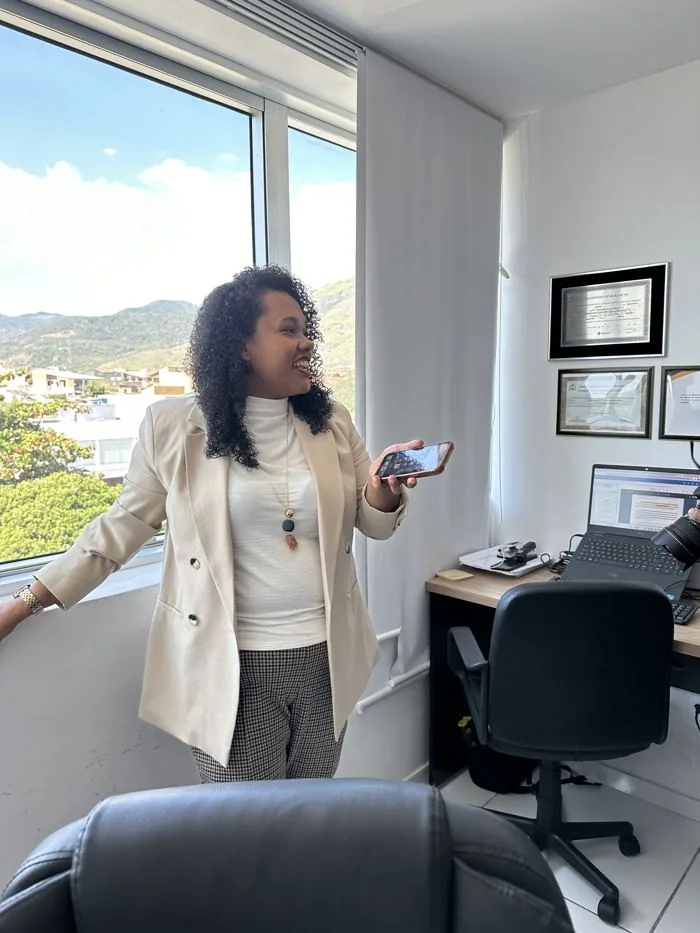

★★★★★
"Atenciosos e abertos a entender e ouvir as questões que a gente tem. Indico muito!!"
Thamy R.via Google
O Ministério Público de Goiás (MPGO) já documentou o caso e recomendou a convocação dos concursados. O prazo original do concurso venceu em 06/06/2026 — entenda o que isso significa para o seu caso.
Você se dedicou, estudou e foi aprovado no Concurso Público 01/2023 da Prefeitura de Novo Gama/GO. A Prefeitura já convocou parte dos professores aprovados — mas seguiu abrindo processos seletivos simplificados para o mesmo cargo, com milhares de vagas em cadastro de reserva, enquanto outros aprovados permanecem sem chamada.
Quando um cargo com concurso vigente é preenchido por contratação temporária, isso tem nome jurídico: preterição. E o Ministério Público de Goiás já se manifestou formalmente sobre esse padrão em Novo Gama.
Números públicos que compõem a base de análise de cada caso — sem promessa de resultado.
O STF reconhece que, quando há contratação temporária para funções com aprovados aguardando, pode haver direito à nomeação dentro do prazo de validade do concurso.
O entendimento do STF é que candidatos aprovados, inclusive em cadastro de reserva, podem ter direito à nomeação quando comprovada a preterição arbitrária e imotivada.
A Constituição restringe contratações temporárias para funções de natureza permanente — cada contrato temporário é elemento de análise no caso concreto.
Vou apresentar os documentos que registram o caso de Novo Gama: o edital do PSS 01/2026, a recomendacao do MPGO e as datas do concurso 01/2023. Voce vai entender o que e pretericao, o que o STF ja decidiu e o que observar no seu caso.
Ver o convite da livePrefere falar antes? Fale com a equipe pelo WhatsApp.

Antes de advogar, a Dra. Luanda foi coordenadora de licitação — conhece o processo administrativo público por dentro, não apenas pela teoria. Foi observando o padrão de contratações temporárias sobrepostas a concursos vigentes que decidiu atuar pelo lado dos aprovados.
Hoje comanda um escritório especializado em Direito Administrativo, com atuação em todo o Brasil, sede no Rio de Janeiro, focado em concursos públicos e situações de preterição.
Verificamos se há preterição configurada: comparamos a data dos contratos temporários com a lista de classificação do seu concurso, o prazo de validade do edital e a natureza permanente do cargo. Você nos envia os documentos; fazemos a análise.
Ajuizamos a ação mandamental com pedido liminar de nomeação — com base no RE 598.099 e Tema 784 do STF — e acompanhamos a distribuição e o sorteio do juízo competente. Você aguarda; nós monitoramos.
Em casos de urgência (concurso próximo do vencimento ou já vencido), requeremos liminar para assegurar a nomeação. Cada decisão interlocutória é analisada e respondida no prazo. Você não precisa acompanhar os autos.
Com a decisão favorável, acompanhamos o ofício de nomeação, a publicação no Diário Oficial e os prazos de posse e exercício. Você assume o cargo; nós cuidamos dos bastidores jurídicos.
Avaliações reais publicadas por clientes no perfil do escritório no Google.
"Atenciosos e abertos a entender e ouvir as questões que a gente tem. Indico muito!!"
"Responde rapidamente, muito atenciosa. Fui atendida com muita transparência e responsabilidade…"
"Responde prontamente, muita solicita e ética. Equipe que traz esclarecimentos e vai atrás das possibilidades que o caso permite. Cheguei por meio de indicação e recomendo."
Avaliações públicas de clientes no Google. Cada caso é analisado individualmente.
Não. O atendimento é feito a distância, do primeiro contato ao acompanhamento do processo, e o escritório atua em todo o Brasil. Você envia os documentos e acompanha cada etapa sem sair de Novo Gama.
Recorrer ao Judiciário é um direito assegurado pela Constituição. A nomeação obtida por decisão judicial tem a mesma validade da administrativa, e retaliação pelo exercício regular de um direito é conduta vedada à Administração Pública.
A análise inicial do seu caso é gratuita. Se houver viabilidade jurídica, as condições são apresentadas de forma clara antes de qualquer decisão sua — sem compromisso.
Depende do caso. O que se examina é se houve preterição durante o período de validade do certame e quais atos foram praticados nesse intervalo. Por isso cada situação exige análise individualizada.